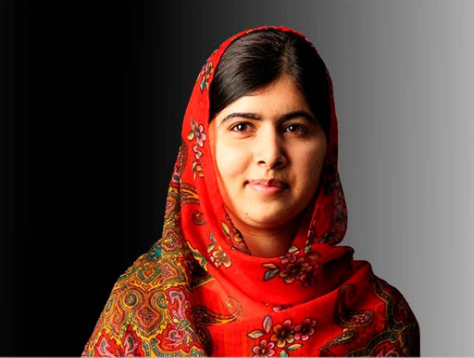
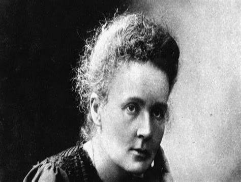
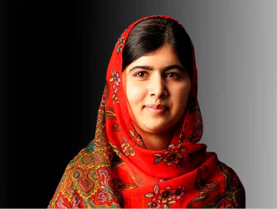
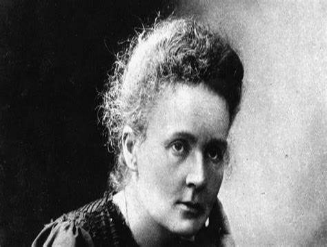

"Mulheres poderosas podem mudar o mundo, não fique parada!"
Sobre nós
Somos uma organização sem fins lucrativos, que busca atingir os objetivos da ODS 5 através da divulgação de histórias de mulheres que mudaram o mundo. E empoderar cada vez mais mulheres e meninas a seguirem seus sonhos e lutarem pelos seus direitos. A igualdade de gênero é um direito humano fundamental e a base para um mundo pacífico, próspero e sustentável. O Objetivo de Desenvolvimento Sustentável 5 (ODS 5) é crucial na Agenda 2030, refletindo que a igualdade de gênero impulsiona o desenvolvimento sustentável. Porém, apesar de avanços significativos que tem sido feito, especialmente em saúde, educação e trabalho, é preciso intensificar esforços para combater discriminações e violências de gênero e promover o empoderamento de mulheres e meninas. A participação delas na política, economia e em várias decisões é essencial para o desenvolvimento sustentável, que não será atingido sem eliminar as barreiras que limitam o potencial de metade da população.
Conheça as mulheres destaques da semana
 


